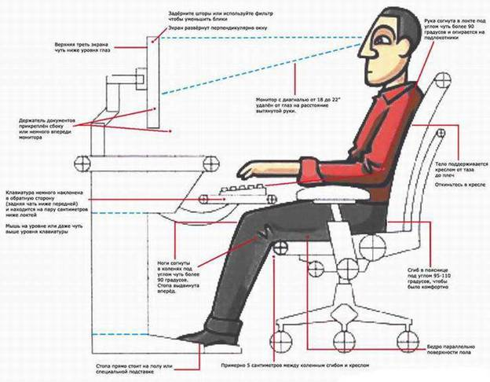

Правила работы на компьютере
Телевизор и компьютер - друзья или враги? Чем именно вреден компьютер и как долго можно находиться
перед включенным телевизором?
Эти и многие другие вопросы волнуют родителей, чьи дети часами смотрят телепередачи или проводят все свое свободное время у компьютера.
Давайте вместе разберемся, где именно притаилась опасность, чего нужно опасаться и как избежать проблем.
Для начала перечислим основные факторы, оказывающие вредное воздействие на детский организм:
Нагрузка на глаза
Неправильная поза
Психологическое давление
Электромагнитное излучение
Фактор первый: Нагрузка на глаза
Пожалуй, это самый главный фактор. Именно из-за нагрузки на зрение у ребенка за компьютером возникают головные боли и головокружение. Если работать за компьютером в течение длительного времени, зрительное переутомление может привести к устойчивому снижению остроты зрения и возникновение глазных болезней. Ради справедливости стоит отметить: не только компьютер является причиной развития близорукости у ребенка. Огромную роль здесь играют наследственность, телевизор, чтение при плохом освещении и многие другие факторы.
Вот несколько полезных советов:
1. Правильная поза.
Во время работы за компьютером нужно сидеть прямо напротив экрана, так, чтобы верхняя часть экрана находилась на уровне глаз. Ни в коем случае нельзя
работать за компьютером лежа. Нельзя работать за компьютером во время еды, а также сидеть ссутулившись, иначе нарушится нормальная работа внутренних
органов.
2. Расстояние от глаз до монитора должно составлять 45-60 см. Если вы играете на ТВ приставке, расстояние от глаз до экрана телевизора должно быть не менее 3 м.
3. Защитные средства. Если вы или ваш ребенок носите очки, их нужно надевать и во время работы за компьютером. Также можно использовать специальные защитные очки с линзами-светофильтрами.
4. Правильное освещение. Помещение, где расположен компьютер, должно быть хорошо освещено. В солнечную погоду прикрывайте окна шторами, чтобы монитор не отсвечивал.
5. Самочувствие. Нельзя работать за компьютером в болезненном или ослабленном состоянии. Это еще больше утомит организм и замедлит процесс выздоровления.
6. Соблюдать режим работы и отдыха. Время от времени необходимо переводить взгляд на посторонние предметы, находящиеся в комнате, а через каждые полчаса делать перерыв на 10-15 минут. Когда мы смотрим телевизор или работаем за компьютером, наши глаза моргают в 6 раз меньше, чем в обычных условиях, и, следовательно, реже омываются слезной жидкостью. Это чревато пересыханием роговицы глаза.
7. Специальная гимнастика. Во время перерыва рекомендуется делать гимнастику для глаз. Нужно встать у окна, посмотреть вдаль, а затем быстро сконцентрировать взгляд на кончике носа. И так 10 раз подряд. Затем нужно быстро поморгать в течение 20-30 секунд. Есть и другое упражнение: резко посмотреть сначала вверх, затем влево, вниз и вправо. Повторить процедуру 10 раз, после чего закрыть глаза и дать им отдохнуть.
8. Питание. Очень полезно принимать витамин A. Он отвечает за чувствительность глаз к яркому свету и резкой смене изображения. Только в точности следуйте инструкции: избыток витамина А ни к чему хорошему не приводит.
Качество монитора
Нагрузка на зрение может быть существенно снижена за счет улучшения качества монитора. Современные мониторы обеспечивают высокую контрастность и чистоту цветов даже в условиях внешней засветки. Самыми безопасными для глаз являются жидкокристаллические дисплеи. В настоящее время они являются приоритетным направлением развития технологии мониторов. К их преимуществам можно отнести малый размер и вес по сравнению с электронно-лучевыми трубками, идеальную фокусировку и геометрию изображения, отсутствие видимого мерцания и помех от магнитных полей. Энергопотребление у ЖК мониторов в 2-4 раза меньше, чем у электронно-лучевых трубок и плазменных экранов. Лучше использовать высокочастотные мониторы (с частотой регенерации не менее 75 Гц и размером зерна не более 0,28 мм). Старайтесь сделать изображение максимально четким. На всех современных телевизорах и мониторах есть специальная функция регулировки четкости. При частом использовании компьютера необходимо выбрать видеокарту, не искажающую реальное изображение. Кроме этого, обратите внимание на VGA-кабель монитора, именно он может быть источником дополнительных помех.
Тем, кто много времени проводит за компьютером, можно посоветовать устанавливать более высокую яркость для просмотра картинок и видео и более низкую для работы с текстами. Но запомните: глаз человека воспринимает только среднюю яркость экранного изображения, поэтому ставить слишком высокую или слишком низкую яркость бесполезно.
И не забывайте протирать экран монитора специальными салфетками. Слой пыли и грязи может быть одной из причин низкого качества изображения.
Содержание изображения
Степень утомляемости глаз зависит также от содержания изображения. Легче всего глаз воспринимает неподвижное крупное цветное изображение в сопровождении звука.
Для ребенка достаточно безопасно рассматривать на экране картинки или фотографии вместе с дикторским текстом.
Хуже воспринимается рисование на компьютере. Здесь звук уже не играет отвлекающей роли и всю работу выполняет глаз.
Еще тяжелее читать текст с экрана. Поэтому Интернет — штука довольно опасная: здесь приходится читать много и быстро.
Ну и, наконец, не стоит злоупотреблять компьютерными играми. Движущееся изображение, мелкие элементы, быстрая смена кадров — все это может привести к переутомлению глаз, если не соблюдать элементарных правил работы за компьютером.
Итог
Так насколько же компьютер опасен для зрения?
Сравнивая его с телевизором, следует помнить, что разрешение компьютерного дисплея обычно выше разрешения телевизионной трубки. Однако к компьютеру человек сидит ближе. И все же можно считать, что нагрузка на зрение от монитора компьютера ниже, чем от телевизора.
Имейте в виду: время, проведенное за компьютером, и время, проведенное перед телевизором, следует суммировать!
Фактор второй: Неправильная поза
Вторым по значимости вредным фактором работы за компьютером является стесненная поза. Во время работы нужно смотреть с определенного расстояния на экран и одновременно держать руки на клавиатуре или мыши, что вынуждает человека принять определенное положение и не изменять его до конца сеанса. В этом отношении компьютер гораздо опаснее телевизора, который позволяет произвольно менять положение тела.
Из-за неправильной позы возникают следующие нарушения:
Затрудненное дыхание. Это самый коварный из всех врагов. Вынесенные вперед локти не дают свободно двигаться грудной клетке. Это может привести к приступам кашля, развитию астмы и прочим отклонениям.
Остеохондроз. Длительное сидение с опущенными плечами вызывает стойкое изменение костно-мышечной системы, а иногда искривление позвоночника.
Заболевания суставов кистей рук. Это профессиональные заболевания, ранее преследовавшие машинисток, а ныне — операторов компьютера. При работе за компьютером рука человека вынуждена совершать множество мелких движений. Как следствие, возникает сильная усталость, а в запущенных случаях развиваются хронические заболевания.
А вот так врачи рекомендуют правильно сидеть за компьютером:

Как уменьшить вредное влияние сидячего положения?
1. Самое важное — это правильно подобранная мебель. Столы, стулья и прочие аксессуары должны быть специализированными. Если вы оборудуете рабочее место ребенка, мебель должна быть именно детской. Хороший стул снижает нагрузку вдвое. Подойдет специальный операторский стул на роликах, с регулируемой спинкой, без подлокотников, вращающийся вокруг своей оси. Он позволяет изменять позу во время работы. Дети с удовольствием ерзают на таких стульях, а значит, их грудная клетка и позвоночник работают. Газовый патрон дает возможность регулировать высоту сидения, что также снижает нагрузку на организм.
2. Стол должен быть компьютерным, со специальной выдвижной доской под клавиатуру. Когда ребенок рисует или играет, ему нужен высокий стол. Для печатания клавиатура должна располагаться на 7-10 см ниже. Выдвижная доска позволяет соблюсти эти требования, к тому же заставляет ребенка периодически изменять позу.
3. В школе на уроках информатики пригодится проекционное оборудование. Использование демонстрационного проектора способствует снижению нагрузки.
Фактор третий: Психологическое давление
Третий по важности фактор — это нагрузка на психику. Работа за компьютером требует не меньшей сосредоточенности, чем вождение автомобиля. Играя в компьютерные игры, ребенок испытывает напряжение, не сравнимое с тем, что он получает в обычных условиях. Эта область мало изучена, поскольку современная мультимедиатехника появилась сравнительно недавно. И все же способы уменьшить психическую нагрузку существуют:
1. в работе следует делать перерывы. На уроке за этим следит учитель. Дома на компьютере следует поставить таймер, чтобы через каждые полчаса компьютер автоматически блокировался на 15 минут.
2. следует внимательно следить за содержательной стороной игр, в которые играет ребенок, и за тем, какие сайты он посещает.
Фактор четвертый: Электромагнитное излучение
В общественном сознании укоренилась мысль о том, что самое вредное в компьютере — это излучение, хотя на самом деле психическое воздействие может оказаться куда серьезнее. Современные мониторы снабжены средствами по обеспечению безопасности. А того излучения, которое, собственно, называется радиацией, монитор вообще не производит. В нем нет устройств со столь мощной энергией. Действительно вредными для человека являются следующие факторы:
1. Электростатические поля. На электронно-лучевой трубке имеется потенциал около 20 000 вольт, что в 100 раз превышает напряжение в сети. Сам по себе потенциал не страшен, но он разгоняет осевшие на экран пылинки до огромных скоростей. И эти пылинки, как пули, врезаются в кожу человека, сидящего перед экраном.
Существуют следующие способы борьбы с этим явлением:
Снижение количества пыли в помещении. В частности, в компьютерных классах крайне нежелательно применение мела, поскольку он постепенно переходит с доски на лица детей путем разгона электростатическими полями. Хороший компьютерный класс оборудован маркерной доской, кондиционером и пылеуловителем, а иногда "люстрой Чижевского". Эти устройства снижают количество пыли в помещении, а "люстра Чижевского" еще и подавляет статические поля.
Ну, а самый простой способ борьбы с последствиями электростатического напряжения — после работы за компьютером умыться холодной водой.
2. Высокочастотные электромагнитные поля. Их воздействие сопоставимо с радиацией, но, к счастью, они очень быстро уменьшаются с расстоянием, элементарно экранируются и управляются. Основной их источник — отклоняющая электромагнитная система кинескопа. В современных мониторах излучение отводится вверх и частично назад. Вперед не излучается ничего. Таким образом, стоять позади монитора, наклоняться над ним и смотреть на него сверху не рекомендуется.
3. Низкочастотные электромагнитные поля раньше не считались вредными, поскольку от компьютера они слабее, чем, скажем, от электрического утюга. Однако взаимодействие собственных полей монитора и внешних электромагнитных полей может вызывать интерференцию, из-за которой изображение на экране начинает мерцать, вызывая ухудшение зрения и головную боль. Следует отметить, что жидкокристаллические дисплеи лишены большинства вышеперечисленных недостатков: напряжение на них значительно ниже, а электромагнитного излучения почти нет.
Нормы работы за компьютером для детей
Итак, безопасность работы ребенка за компьютером зависит от многих обстоятельств. При хорошем оборудовании рабочего места и правильном подборе рода занятий время безопасной работы может быть весьма продолжительным. И, наоборот, при плохой организации рабочего места даже общепринятые нормы могут быть вредны для здоровья.
Нормативы.
Вариант 1 — это стандартные нормы, разработанные Министерством здравоохранения в расчете на компьютерные классы, оборудованные обыкновенной школьной мебелью и компьютерами выпуска ранее 1997 года — с устаревшими дисплеями, простым программным обеспечением и отсутствием динамических игр.
Вариант 2 — это более современные нормы, ориентированные на лицеи и примерно соответствующие специализированному домашнему рабочему месту. Они предполагают высококонтрастный дисплей, специальную мебель, наличие кондиционера и систем пылесбора.
Вариант 3 — это вариант экстра-класса, предусматривающий работу на компьютере с жидкокристаллическим дисплеем.
|
Класс |
Вариант 1 |
Вариант 2 |
Вариант 3 |
|
1 |
Работа на компьютере запрещена |
30 минут в неделю |
45 минут в неделю |
|
2-3 |
30 минут в неделю |
45 минут в неделю |
45 минут в неделю |
|
4-6 |
1 час в неделю |
1,5 часа в неделю, не более 45 минут в день |
2 часа в неделю, не более 1 часа в день |
|
7-9 |
2 часа в неделю |
2,5 часа в неделю, не более 1 часа в день |
2,5 часа в неделю, не более 1 часа в день |
|
10-11 |
4 часа в неделю |
6 часов в неделю, не более 1 часа в день |
7 часов в неделю, не более 1 часа в день |
Детям до трех лет работать за компьютером и играть в компьютерные игры не рекомендуется.
Ребенку дошкольного возраста разрешается проводить за компьютером не более 30 минут в день.
Источник: http://sbzosch.ucoz.ru/index/pravila_raboty_na_kompjutere/0-28